Interpolation mit ImageResize
Wirkung der Algorithmen
Stretch
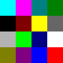
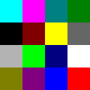
Box

Linear
Half Cosine
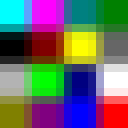
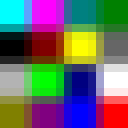
Cosine
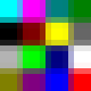
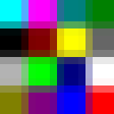
Bicubic
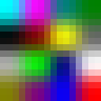
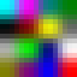
Mitchell
Spline
Lanczos 2
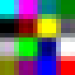
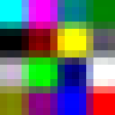
Lanczos 3
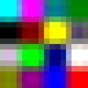
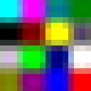
Lanczos 4
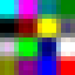
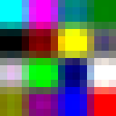
Wirkung beim Hochskalieren
(Ohne Bild) Best Quality verwendet abhängig vom Herauf- oder Herunterskalieren Spline bzw. Mitchell
Stretch ist kein Filter, sondern ein Strecken der Pixel ohne Interpolation

BoxEquivalent zum Stretch mit hoher Qualität und pixelzentrierten Koordinaten

Linear Lineare Interpolation ergibt einen Übergang zwischen den Pixeln

Half Cosine Mischung aus Linear und Cosine ergibt einen mittleren Übergang zwischen den Pixeln

Cosine Cosinus-artiger Interpolation ergibt einen schnelleren Übergang zwischen den Pixeln

Bicubic Simpler bi-kubischer filter (verschwommen)

Mitchell Der Mitchell-Filter ist eine gute Interpolation fürs Herunterskalieren.

Spline Guter Filter für das Heraufskalieren

Lanczos 2 Lanczos-Filter mit Radius 2 und Unschärfe-Korrektur

Lanczos 3 Lanczos-Filter mit Radius 3, hoher Kontrast

Lanczos 4 Lanczos-Filter mit Radius 4, hoher Kontrast

Wirkung beim Herunterskalieren
Stretch ist kein Filter, sondern ein Strecken der Pixel ohne Interpolation

BoxEquivalent zum Stretch mit hoher Qualität und pixelzentrierten Koordinaten

Linear Lineare Interpolation ergibt einen Übergang zwischen den Pixeln

Half Cosine Mischung aus Linear und Cosine ergibt einen mittleren Übergang zwischen den Pixeln

Cosine Cosinus-artiger Interpolation ergibt einen schnelleren Übergang zwischen den Pixeln

Bicubic Simpler bi-kubischer filter (verschwommen)

Mitchell Der Mitchell-Filter ist eine gute Interpolation fürs Herunterskalieren.

Spline Guter Filter für das Heraufskalieren

Lanczos 2 Lanczos-Filter mit Radius 2 und Unschärfe-Korrektur

Lanczos 3 Lanczos-Filter mit Radius 3, hoher Kontrast

Lanczos 4 Lanczos-Filter mit Radius 4, hoher Kontrast